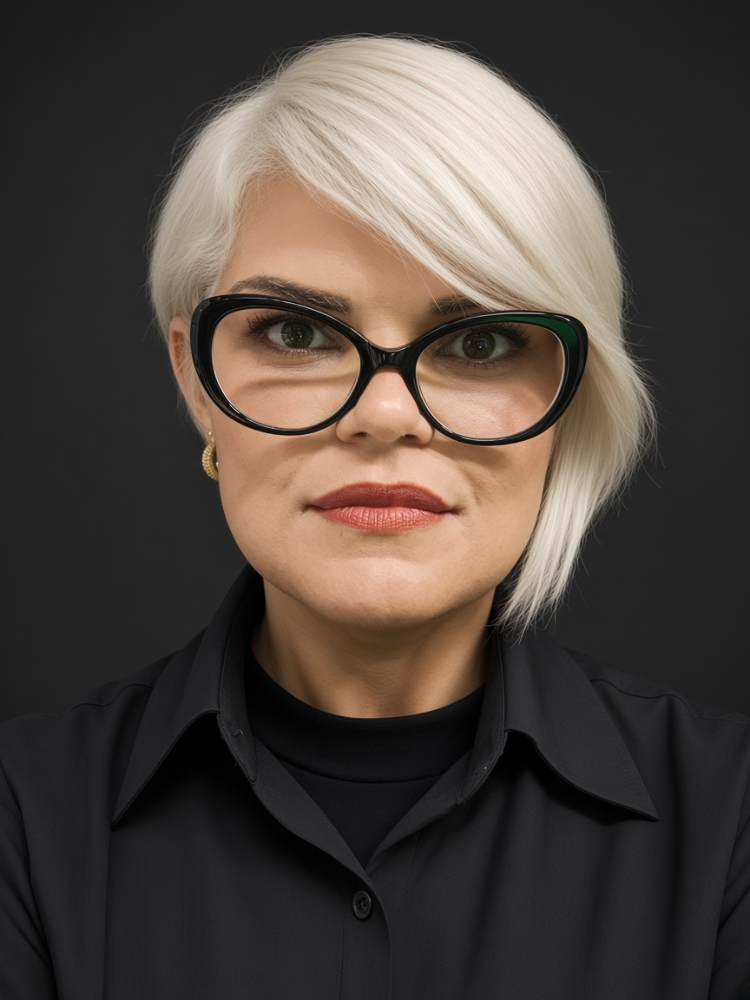
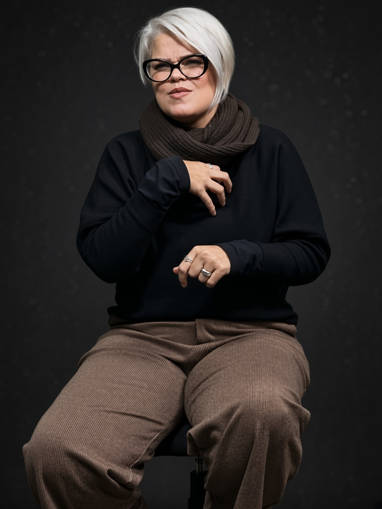

Certificação PROLIBRAS
Exame Nacional de Certificação em Libras (MEC/INEP-UFSC): proficiência em tradução e interpretação da Língua Brasileira de Sinais.
Inclusiva - Processos e Treinamentos
Noemi Provvidenti
Desde 1995, atuamos como ponte entre mundos: comunicação acessível para a comunidade surda em universidades, câmaras, prefeituras, OAB e empresas da iniciativa privada.


Já prestamos serviços para
Inclusiva - Processos e Treinamentos é liderada por Noemi Provvidenti, intérprete e tradutora de Libras com trajetória iniciada em 1995 e certificação PROLIBRAS em 2006 (MEC/INEP-UFSC).
“Atuo como ponte entre mundos, garantindo que a comunicação seja acessível, respeitosa e eficaz para a comunidade surda.”
Atendemos órgãos públicos, universidades, entidades de classe e empresas: interpretação em plenárias, eventos institucionais, treinamentos, lives e vídeos. Em 1998, Noemi realizou interpretação para pessoa com deficiência visual e auditiva — compromisso com acessibilidade em todas as dimensões.
Em 2026, conclui a pós-graduação em TILS — Tradutor e Intérprete de Libras na Faculdade Metropolitana, somando formação acadêmica a mais de três décadas de prática.
Exame Nacional de Certificação em Libras (MEC/INEP-UFSC): proficiência em tradução e interpretação da Língua Brasileira de Sinais.
Tradutor e Intérprete de Libras (TILS) — Faculdade Metropolitana, alinhada à prática contínua desde 1995.
Começo da atuação como intérprete e tradutora de Libras.
Interpretação para pessoa com deficiência visual e auditiva.
Habilitação de proficiência em tradução e interpretação de Libras.
Universidades, câmaras municipais, prefeituras, OAB, tribunais, feiras e empresas.
Tradutor e Intérprete de Libras — Faculdade Metropolitana.
Interpretação e tradução em Libras para tornar a mensagem acessível — presencialmente, online ou em estúdio.
Presencial e online para eventos, reuniões, palestras, workshops e formações.
Plenárias, audiências, sessões e eventos de câmaras, prefeituras e entidades de classe.
Aulas, congressos, lives acadêmicas e ações de inclusão no ensino superior.
Convenções, treinamentos internos e programas de diversidade da iniciativa privada.
Janela de Libras para campanhas, canais digitais e conteúdos de estúdio.
Orientação para práticas inclusivas de comunicação e acessibilidade linguística.
A Inclusiva presta serviços de interpretação em Libras para instituições públicas, entidades de classe e empresas da iniciativa privada. Entre elas:
Universidade Federal de Itajubá: interpretação em contextos acadêmicos e institucionais.
Acessibilidade em Libras para sessões, eventos e comunicação institucional.
Interpretação em plenárias e atividades da Casa Legislativa.
Eventos e comunicação da gestão municipal com acessibilidade em Libras.
Interpretação para ações institucionais e eventos da prefeitura.
Acessibilidade comunicacional em eventos e atividades da Ordem.
Empresas e produtoras: eventos internos, treinamentos, lives e campanhas com Libras.
Interpretação em ambiente jurídico e institucional.
Eventos e comunicação institucional acessível.
Treinamentos, palestras e capacitações.
Eventos corporativos e programas de inclusão.
Interpretação em evento sobre tecnologia e educação.
Vivência SESC com Flávia Mariano e Renato Frosch — 30 anos do Clube do Pedal.
Estratégia Pessoal — Conectando e Raízes com Elas.
Arte com acessibilidade em Libras.
Feira internacional do setor gráfico.
Tradução e interpretação bilíngue para conteúdos internacionais.
Orçamento para eventos, plenárias, aulas, lives e vídeos. Atendimento em todo o Brasil.
Telefone / WhatsApp: +55 11 97963-1676
E-mail: nprovvidenti@gmail.com
Instagram: @librastrad
LinkedIn: noemi-provvidenti